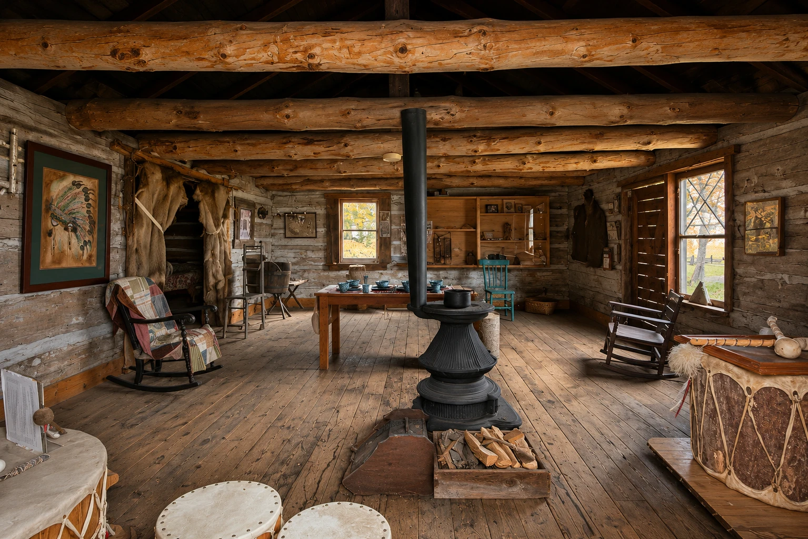

HART, IN MOTION · A PERSONAL FIELD TRIPSome places
Some places
are part of
who we are.
My family’s heritage belongs at the heart of this collection. We begin with the cabins—with home, memory, and the details worth carrying forward.
Interior render based on my photographs · Interpretive study01 / BEGIN WITH HOMETwo cabins.
Two cabins.
Room for a closer look.
Cobmoosa House leads this journey through my family’s heritage. Beside it, the Log House opens another view of domestic life. Their histories are distinct. Both invite us to notice how people made a place their own.
A personal connection is the starting point. Historical notes identify their sources. Interior objects are shown as photographed museum displays; their presence does not establish original ownership or an exact period arrangement.
From a room
to a whole town.
Seventeen exterior studies, two interior galleries, and the photographs behind them. Wander from cabins to the church, mill and railway, then out beneath the downtown lights.
Explore the interactive studies ↓THE COLLECTION MAP
Where shall we wander?
Tap a landmark to open its 3D study and notes. This illustrated index groups the collection by setting; positions and distances are not a surveyed street map.
A virtual field trip while the Historic District is being reimagined. Explore Hart’s official places & maps ↗
Choose your next place.
LIVE 3D STUDYPreparing the scene…
Between the buildings.
The signs, the skies, the little things almost missed. Tap a photograph to look closer.
Local records. Living knowledge.
Historical notes link to their sources inside each study. Photographic observations are distinguished from archival claims, and unverified dates stay open.
Hart Heritage Preservation ↗Hart Historic District & Museum ↗City of Hart · Historic brochure ↗Take Me to Hart · Local history ↗City of Hart · District information ↗
New church, mill and cabin records checked November 2, 2026; earlier collection notes checked October 24, 2026. The museum website lists a temporary closure for reimagining; older schedules and photographed rental signs are not confirmation of current availability. Independent project by Simple Minds Studios; no official affiliation implied.